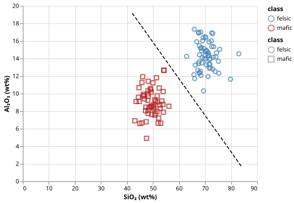

Mineral Classification by Geochemistry
The Problem
- Geochemists measure rock samples as oxide weight percentages (wt%), which is the fraction of each chemical compound in the rock
- A classifier that assigns samples to mineral classes from their chemistry automates a task that otherwise requires expert visual inspection of thin sections under a microscope
- We train a logistic regression model on $\text{SiO}_2$ (silica) and $\text{Al}_2\text{O}_3$ (alumina) to separate felsic rocks (granite-like, silica-rich) from mafic rocks (basalt-like, silica-poor)
Generating Synthetic Geochemical Data
- We start with synthetic data drawn from two Gaussian distributions that mimic the composition ranges reported in igneous petrology textbooks
- Felsic rocks average 70 wt% $\text{SiO}_2$ and 14 wt% $\text{Al}_2\text{O}_3$
- Mafic rocks average 50 wt% $\text{SiO}_2$ and 9 wt% $\text{Al}_2\text{O}_3$
- The two distributions overlap because real mineral classification is never perfectly clean
# Synthetic geochemical data: two mineral classes distinguished by oxide concentrations.
# Felsic rocks (e.g. granite) are silica-rich; mafic rocks (e.g. basalt) are silica-poor.
# Feature 0: SiO2 concentration (wt%)
# Feature 1: Al2O3 concentration (wt%)
SEED = 7493418 # RNG seed
FELSIC_MEAN = [70.0, 14.0] # granite-like: high silica, moderate alumina
FELSIC_STD = [3.0, 1.5]
MAFIC_MEAN = [50.0, 9.0] # basalt-like: lower silica, lower alumina
MAFIC_STD = [3.0, 1.5]
N_FELSIC = 80 # training + test samples per class
N_MAFIC = 80
TRAIN_FRAC = 0.75 # fraction used for training
def make_mineral_data(n_felsic=N_FELSIC, n_mafic=N_MAFIC, seed=SEED):
"""Return (X, y) for a two-class geochemical dataset.
X is (n_felsic + n_mafic, 2): columns are SiO2 and Al2O3 wt%.
y is (n_felsic + n_mafic,): 0 for felsic, 1 for mafic.
Rows are shuffled so classes are interleaved.
"""
rng = np.random.default_rng(seed)
X_felsic = rng.normal(FELSIC_MEAN, FELSIC_STD, (n_felsic, 2))
X_mafic = rng.normal(MAFIC_MEAN, MAFIC_STD, (n_mafic, 2))
X = np.vstack([X_felsic, X_mafic])
y = np.concatenate([np.zeros(n_felsic), np.ones(n_mafic)])
idx = rng.permutation(len(y))
return X[idx], y[idx]
The Logistic Regression Model
- The model predicts the probability that a sample is mafic (class 1):
$$p = \sigma(w_0 \cdot x_0 + w_1 \cdot x_1 + b) = \frac{1}{1 + e^{-(w_0 x_0 + w_1 x_1 + b)}}$$
- $\sigma$ is the sigmoid function, which maps any real number to $(0, 1)$
- $x_0$ and $x_1$ are the (normalised) $\text{SiO}_2$ and $\text{Al}_2\text{O}_3$ concentrations
- $w_0$, $w_1$, and $b$ are learned from data
def sigmoid(z):
"""Map any real number to (0, 1): sigma(z) = 1 / (1 + exp(-z))."""
return 1.0 / (1.0 + np.exp(-z))
Why must features be normalized before training logistic regression with gradient descent?
- Normalisation makes the sigmoid output exactly 0.5 at the start of training.
- Wrong: initial weights are zero, so $z = 0$ and $\sigma(0) = 0.5$ regardless of feature scale.
- Features on very different scales cause gradient descent to take very small steps along
- one axis and large steps along another, slowing convergence.
- Correct: unnormalized gradients have components proportional to feature magnitude, creating an elongated loss surface that makes convergence slow and erratic.
- Normalization ensures the model cannot overfit by constraining the weight magnitudes.
- Wrong: normalization changes the input scale, not the weight values; regularization is the standard tool for constraining weights.
- The sigmoid function is only defined for inputs in $[0, 1]$.
- Wrong: the sigmoid is defined for all real numbers; the $[0, 1]$ interval is its output range.
def normalize(X, mean=None, std=None):
"""Standardize X to zero mean and unit standard deviation.
If mean and std are supplied (from the training set), apply them to X
without recomputing — this ensures test data is scaled identically.
"""
if mean is None:
mean = X.mean(axis=0)
if std is None:
std = X.std(axis=0)
return (X - mean) / std, mean, std
Training by Gradient Descent
- At each iteration, the model computes the binary cross-entropy loss:
$$\mathcal{L} = -\frac{1}{n}\sum_{i=1}^n \left[ y_i \log p_i + (1 - y_i) \log(1 - p_i) \right]$$
- The gradient of $\mathcal{L}$ with respect to the weights is $\mathbf{X}^\top (\mathbf{p} - \mathbf{y}) / n$, and with respect to the bias is $\text{mean}(\mathbf{p} - \mathbf{y})$
- Each gradient-descent step subtracts the gradient scaled by the learning rate
def train(X, y, lr=LEARNING_RATE, n_iter=N_ITER):
"""Fit a logistic regression model by gradient descent.
Parameters
----------
X : (n, p) array of features (should be normalized)
y : (n,) array of labels, 0 or 1
lr : learning rate
n_iter : number of full-batch gradient steps
Returns
-------
w : (p,) weight vector
b : scalar bias
losses : list of binary cross-entropy loss at each iteration
"""
n, p = X.shape
w = np.zeros(p)
b = 0.0
losses = []
for _ in range(n_iter):
z = X @ w + b
p_hat = sigmoid(z)
# Binary cross-entropy; clip to avoid log(0)
p_hat_clipped = np.clip(p_hat, 1e-12, 1 - 1e-12)
loss = -np.mean(y * np.log(p_hat_clipped) + (1 - y) * np.log(1 - p_hat_clipped))
losses.append(loss)
# Gradients
err = p_hat - y
dw = X.T @ err / n
db = err.mean()
w -= lr * dw
b -= lr * db
return w, b, losses
Put the steps of one gradient-descent iteration in the correct order.
- Compute the linear combination $z = X w + b$
- Apply the sigmoid to get predicted probabilities $\hat{p} = \sigma(z)$
- Evaluate the binary cross-entropy loss
- Compute gradients $\partial \mathcal{L}/\partial w$ and $\partial \mathcal{L}/\partial b$
- Update weights: $w \leftarrow w - \alpha \cdot \partial \mathcal{L}/\partial w$
Decision Boundary and Classification
- The decision boundary is the line where $p = 0.5$, i.e., where $w_0 x_0 + w_1 x_1 + b = 0$
- Rearranging for $x_1$ ($\text{Al}_2\text{O}_3$) as a function of $x_0$ ($\text{SiO}_2$) gives:
$$x_1 = -\frac{w_0 x_0 + b}{w_1}$$
- Because features were normalised during training, the boundary must be mapped back to original units before plotting
def decision_boundary_line(w, b, mean, std, x_range):
"""Return (x_vals, y_vals) for the decision boundary in original feature space.
The boundary satisfies w[0]*x_norm + w[1]*y_norm + b = 0.
Re-expressing in un-normalized coordinates:
w[0]*(x - mean[0])/std[0] + w[1]*(y - mean[1])/std[1] + b = 0
Solving for y:
y = mean[1] - std[1]/w[1] * (w[0]*(x - mean[0])/std[0] + b)
"""
x_vals = np.linspace(*x_range, 200)
y_vals = mean[1] - (std[1] / w[1]) * (w[0] * (x_vals - mean[0]) / std[0] + b)
return x_vals, y_vals
def predict(X, w, b, threshold=0.5):
"""Return binary class predictions (0 or 1) for each row of X."""
return (sigmoid(X @ w + b) >= threshold).astype(int)
def accuracy(y_true, y_pred):
"""Return fraction of correct predictions."""
return np.mean(y_true == y_pred)

Match each component of the logistic regression model to its role.
| Component | Role |
|---|---|
| $w_0 x_0 + w_1 x_1 + b$ | Separating hyperplane in feature space |
| $\sigma(\cdot)$ | Maps the linear score to a probability |
| $\mathcal{L}$ | Penalises confident wrong predictions more heavily than uncertain ones |
| Decision boundary | The surface where the model is maximally uncertain ($p = 0.5$) |
Testing
- Sigmoid known values
- $\sigma(0) = 0.5$ exactly, $\sigma(z) \to 1$ as $z \to +\infty$, and $\sigma(z) \to 0$ as $z \to -\infty$. These are identities that must hold regardless of the training data.
- Normalization properties
- After normalization, each feature column must have mean 0 and standard deviation 1. Applying training statistics to test data must reproduce $(\mathbf{x} - \mu) / \sigma$ without recomputing $\mu$ or $\sigma$ from the test set.
- Loss decreases during training
- A correct gradient-descent implementation must reduce the cross-entropy loss monotonically over the first 100 iterations. An increase would indicate a sign error in the gradient or an excessively large learning rate.
- Accuracy on well-separated data
- The two classes are separated by roughly 6.7 standard deviations in $\text{SiO}_2$. A correctly trained classifier must achieve at least 95% accuracy; a lower score indicates a bug.
- Accuracy with seed=42
- With default parameters, held-out test accuracy must reach at least 95%. The tolerance of 5% is wide enough to accommodate small variations between random seeds while still catching a failed classifier.
- Predict with known weights
- With $w = [10, 0]$ and $b = 0$, the boundary is at $x_0 = 0$. A sample with $x_0 = 1$ must be predicted class 1 and a sample with $x_0 = -1$ must be predicted class 0.
import numpy as np
import pytest
from generate_mineral import make_mineral_data, train_test_split, TRAIN_FRAC
from mineral import sigmoid, normalize, train, predict, accuracy
def test_sigmoid_at_zero():
# sigmoid(0) = 0.5 by definition.
assert sigmoid(0.0) == pytest.approx(0.5)
def test_sigmoid_large_positive():
# sigmoid(z) → 1 as z → +∞; at z=100 the deviation from 1 is negligible.
assert sigmoid(100.0) == pytest.approx(1.0, abs=1e-6)
def test_sigmoid_large_negative():
# sigmoid(z) → 0 as z → -∞.
assert sigmoid(-100.0) == pytest.approx(0.0, abs=1e-6)
def test_normalize_zero_mean_unit_std():
# Normalized training data must have mean ≈ 0 and std ≈ 1 for each feature.
X, _ = make_mineral_data()
X_n, mean, std = normalize(X)
assert np.allclose(X_n.mean(axis=0), 0.0, atol=1e-10)
assert np.allclose(X_n.std(axis=0), 1.0, atol=1e-10)
def test_normalize_applies_training_stats():
# Normalizing test data with training mean/std must not recompute stats.
X, _ = make_mineral_data()
n = len(X)
X_train, X_test = X[: n // 2], X[n // 2 :]
X_n, mean, std = normalize(X_train)
X_test_n, _, _ = normalize(X_test, mean, std)
expected = (X_test - mean) / std
assert np.allclose(X_test_n, expected)
def test_training_loss_decreases():
# The binary cross-entropy loss must decrease over the first 100 iterations.
X, y = make_mineral_data()
X_n, _, _ = normalize(X)
_, _, losses = train(X_n, y, n_iter=100)
assert losses[-1] < losses[0]
def test_perfect_separation():
# Two perfectly separated clusters must achieve 100% training accuracy.
# Felsic centred at (70, 14), mafic at (50, 9) — 6-sigma apart in SiO2.
X, y = make_mineral_data()
X_n, _, _ = normalize(X)
w, b, _ = train(X_n, y, n_iter=1000)
y_pred = predict(X_n, w, b)
# The two classes are well-separated; expect ≥ 95% training accuracy.
assert accuracy(y, y_pred) >= 0.95
def test_test_accuracy():
# With default parameters, test accuracy must be ≥ 95%.
# The two classes differ by ~6.7 std devs in SiO2; the boundary should be sharp.
X, y = make_mineral_data()
X_train, y_train, X_test, y_test = train_test_split(X, y, TRAIN_FRAC)
X_train_n, mean, std = normalize(X_train)
X_test_n, _, _ = normalize(X_test, mean, std)
w, b, _ = train(X_train_n, y_train)
y_pred = predict(X_test_n, w, b)
assert accuracy(y_test, y_pred) >= 0.95
def test_accuracy_all_correct():
assert accuracy(np.array([0, 1, 0, 1]), np.array([0, 1, 0, 1])) == pytest.approx(
1.0
)
def test_accuracy_all_wrong():
assert accuracy(np.array([0, 1, 0, 1]), np.array([1, 0, 1, 0])) == pytest.approx(
0.0
)
def test_predict_known_weights():
# With w=[10, 0], b=0: samples with X[:,0] > 0 should be predicted class 1.
X = np.array([[1.0, 0.0], [-1.0, 0.0]])
w = np.array([10.0, 0.0])
b = 0.0
y_pred = predict(X, w, b)
assert y_pred[0] == 1
assert y_pred[1] == 0
Mineral classification key terms
- Felsic rock
- Silica-rich igneous rock (granite, rhyolite); typically $\text{SiO}_2 > 63$ wt%
- Mafic rock
- Silica-poor, magnesium- and iron-rich igneous rock (basalt, gabbro); typically $\text{SiO}_2 < 52$ wt%
- Sigmoid function
- $\sigma(z) = 1/(1 + e^{-z})$; maps any real number to the open interval $(0, 1)$ for use as a probability
- Binary cross-entropy
- $-[y \log p + (1-y)\log(1-p)]$; loss function that penalises confident wrong predictions
- Decision boundary
- The surface in feature space where the model assigns equal probability to both classes; a line for two features
- Gradient descent
- Iterative optimisation that moves weights in the direction that most rapidly decreases the loss
Exercises
Do the math
The Mahalanobis distance between two univariate Gaussians with means $\mu_1$, $\mu_2$ and
equal standard deviation $\sigma$ is $|\mu_1 - \mu_2| / \sigma$.
Using FELSIC_MEAN[0] = 70, MAFIC_MEAN[0] = 50, FELSIC_STD[0] = 3,
what fraction of the $\text{SiO}_2$ distributions overlap?
(Hint: use the 68-95-99.7 rule: the distance is about $6.7\sigma$, so overlap $\approx 0$.)
Three-class classification
Add a third class (ultramafic rocks, e.g. peridotite, with $\text{SiO}_2 \approx 42$ wt% and $\text{Al}_2\text{O}_3 \approx 3$ wt%).
Extend train to use the softmax function and categorical cross-entropy loss instead of the
binary formulation. Report per-class precision and recall on a held-out test set.
Learning-rate sensitivity
Run train with learning rates $\alpha \in {0.001, 0.01, 0.1, 1.0, 10.0}$ for 500
iterations each. Plot the final training loss as a function of $\alpha$ and identify the
range where gradient descent converges reliably. Explain why very large learning rates
cause divergence.
Decision boundary as a function of iteration count
Save the weights $w$ and bias $b$ every 50 iterations during training. Plot the decision boundary at each checkpoint on the same scatter plot. Show that the boundary rotates and shifts as training progresses and stabilises near the optimum.
Effect of class imbalance
Generate a dataset with 160 felsic samples and 20 mafic samples. Train the classifier and
report the confusion matrix. Show that the model achieves high overall accuracy by
predicting felsic almost everywhere, then implement class-weighted cross-entropy loss
(multiply the mafic term by n_felsic / n_mafic) and show that it recovers better
detection of the minority class.